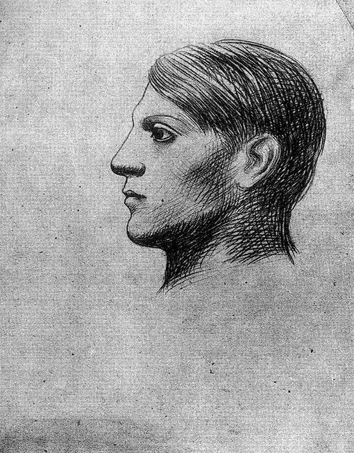

Pablo Picasso,1881 - 1973,Cubism,Spanish,"Pablo Ruiz Picasso (; Spanish: [ˈpaβlo piˈkaso]; 25 October 1881 – 8 April 1973) was a Spanish painter, sculptor, printmaker, ceramicist, stage designer, poet and playwright who spent most of his adult life in France. Regarded as one of the most influential artists of the 20th century, he is known for co-founding the Cubist movement, the invention of constructed sculpture, the co-invention of collage, and for the wide variety of styles that he helped develop and explore. Among his most famous works are the proto-Cubist Les Demoiselles d'Avignon (1907), and Guernica (1937), a dramatic portrayal of the bombing of Guernica by the German and Italian airforces during the Spanish Civil War.",http://en.wikipedia.org/wiki/Pablo_Picasso,439
